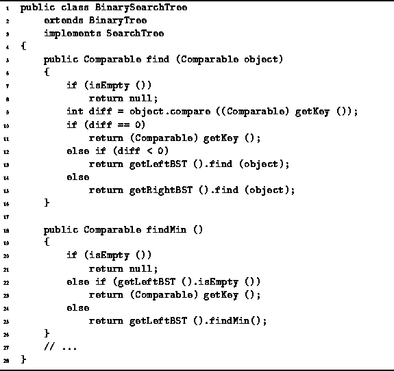
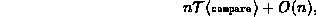
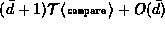
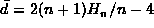
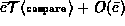
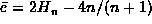

Data Structures and Algorithms
with Object-Oriented Design Patterns in Java
Data Structures and Algorithms
with Object-Oriented Design Patterns in Java
Program  gives the code for the find method
of the BinarySearchTree class.
The find method takes as its argument any Comparable object.
The purpose of the method is to search the tree for an object
which matches the argument.
If a match is found, find returns the matching object.
Otherwise, find returns null.
gives the code for the find method
of the BinarySearchTree class.
The find method takes as its argument any Comparable object.
The purpose of the method is to search the tree for an object
which matches the argument.
If a match is found, find returns the matching object.
Otherwise, find returns null.

Program: BinarySearchTree class find and findMin methods.
The recursive find method starts its search at the root and descends one level in the tree for each recursive call. At each level at most one object comparison is made (line 9). The worst case running time for a search is

where  is the time to compare two objects
and n is the number of internal nodes in the tree.
The same asymptotic running time applies for both successful
and unsuccessful searches.
is the time to compare two objects
and n is the number of internal nodes in the tree.
The same asymptotic running time applies for both successful
and unsuccessful searches.
The average running time for a successful search is
,
where  is the average depth
of an internal node in a binary search tree.
If  , the average time of a successful search is
, the average time of a successful search is  .
.
The average running time for an unsuccessful search is
,
where  is the average depth
of an external node in a binary search tree.
If  , the average time of an unsuccessful search is
, the average time of an unsuccessful search is  .
.
 Copyright © 1998 by Bruno R. Preiss, P.Eng. All rights reserved.
Copyright © 1998 by Bruno R. Preiss, P.Eng. All rights reserved.